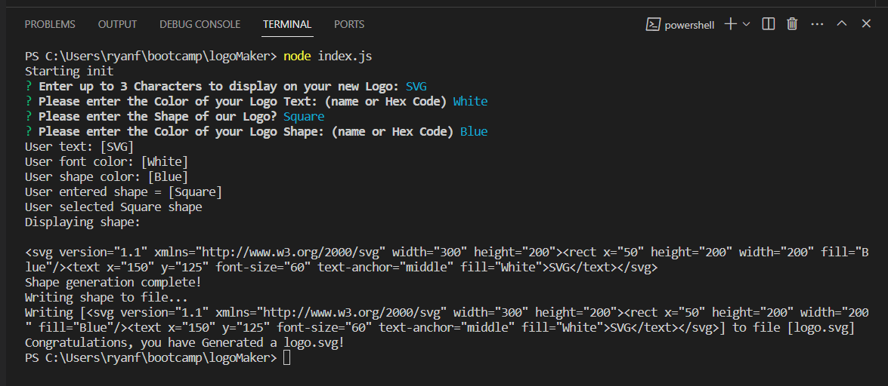
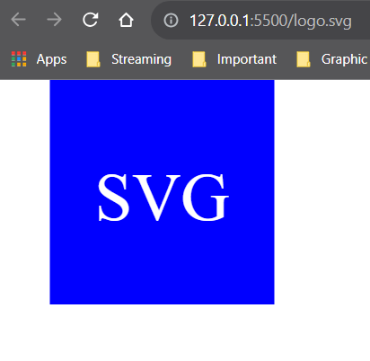
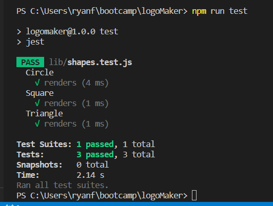

How to Use!
- Start by Cloning the Repo
- Open the Repo using VS Code
- Right-Click the file
index.js
and Open in Integrated Terminal - Install Dependancies
- Node.js
- Jest
- Inquirer
- Graceful-FS
- Type the following in the terminal:
node index.js
and press Enter - Follow the Prompts
- Your personalized Logo will be saved as:
logo.svg
Screenshots


